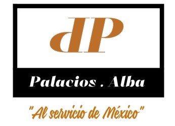

|  | Palacios . Alba | ||
|---|---|---|---|
| Somos consultores y contadores dedicados a ayudar a los dueños de empresas y asistentes administrativos. Palacios.Alba esta ubicado en Tijuana B.C. también estamos a la disposición de viajar por la republica mexicana para visitar a nuestros clientes en sus oficinas. También escribimos en nuestro blog para capacitación, lo que creemos que son las preguntas más relevantes e importantes de nuestros futuros clientes. Nuestra sección de capacitación está llena de materiales didácticos, descargas del demos, etc. | Déjanos tus datos nosotros te llamamos, o si lo prefieres contáctanos en Meet También puedes solicitar un diagnóstico de tu situación fiscal. | ||
| Documentamos informes financieros. | Manejamos registros, sistemas y presupuestos financieros | Hacemos auditorías financieras. | reducción de costos, insolvencias, entre otros: |
| Revisando los libros contables | Brindando asesoría financiera y tributaria. | Reportando irregularidades. | Examinando las cuentas y registros financieros. |
Analizando ganancias y los gastos. | Calculando el monto a cancelar por concepto de impuestos. Supervisamos y entrenamos a Contadores recién graduados y a pasantes. | Elaboramos informes financieros y tributarios | Elaborando el balance de los libros financieros y Redactando informes sobre el estado financiero |